Nishiwaga
Nishiwaga · Iwate
Nishiwaga
Highlighted on the Iwate map.
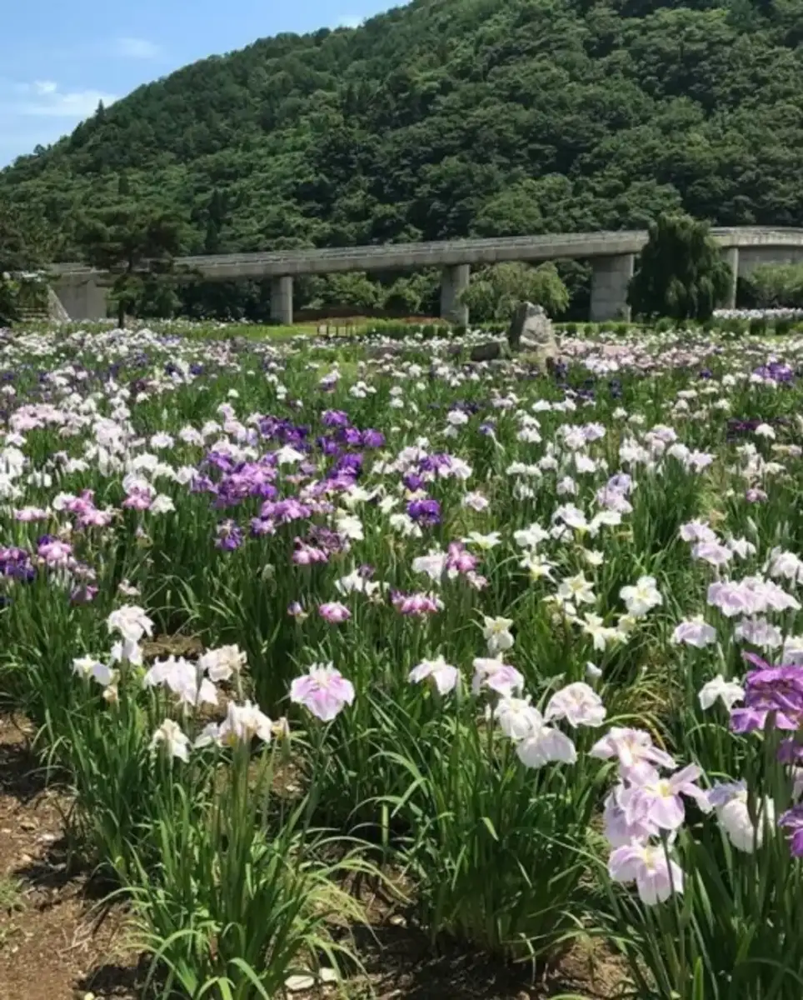
Stay
旅館 一城
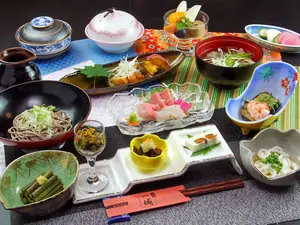
Ryokan Ichijou
Ryokan inn in Nishiwaga, Iwate.
かたくりの宿 旅館 一休館
Katakurino Yado Ryokan Ikkyuu Kan
Ryokan inn in Nishiwaga, Iwate.
世寿美屋旅館
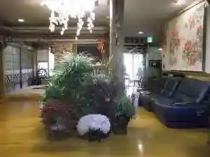
Yo Sumi Ya Ryokan
Ryokan inn in Nishiwaga, Iwate.
【山人-yamado-】温泉と森の滋味を愉しむ大人の隠れ宿
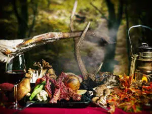
( Sanjin -Yamado- ) Onsen To Mori No Jimi Wo Tanoshi Mu Otona No Kakure Yado
Onsen lodging in Nishiwaga, Iwate.
湯川温泉 食べる宿 萬鷹旅館
Yukawaonsen Tabe Ru Yado Man Taka Ryokan
Ryokan inn in Nishiwaga, Iwate.
湯川温泉 湯治 高繁旅館
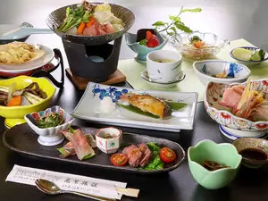
Yukawaonsen Touji Taka Han Ryokan
Ryokan inn in Nishiwaga, Iwate.
静山荘
Seizan Sou
Lodge in Nishiwaga, Iwate.
Dining
山人
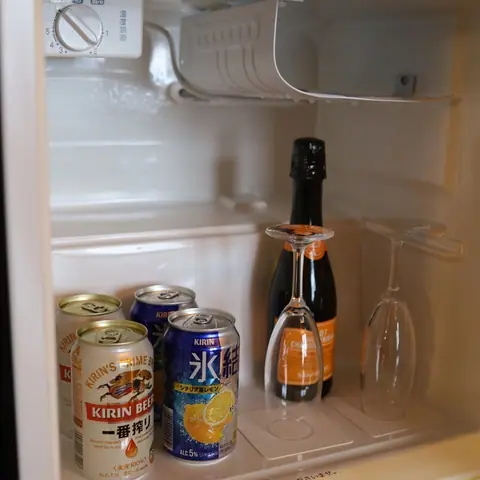
Sanjin
Ryokan restaurant in Nishiwaga, Iwate.
十割そばの店 湯夢プラザ
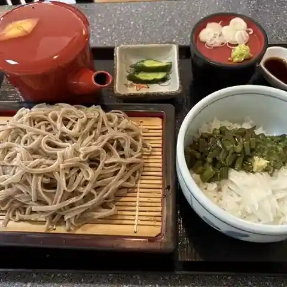
Juu Wari Sobano Mise Yu Yume Puraza
Soba restaurant in Nishiwaga, Iwate.
母ちゃんの店 わがや
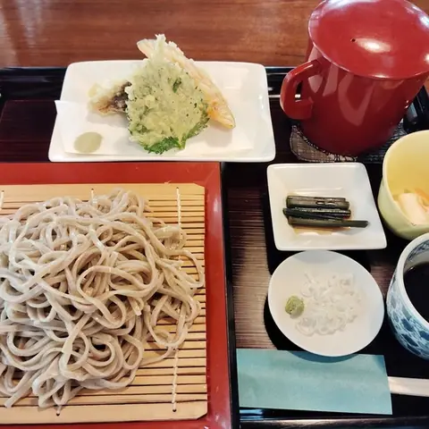
Kaachan No Mise Wagaya
Soba restaurant in Nishiwaga, Iwate.
ドライブイン湯田
Doraibuin Yuda
Jingisukan (lamb BBQ) restaurant in Nishiwaga, Iwate.
ネビラキカフェ
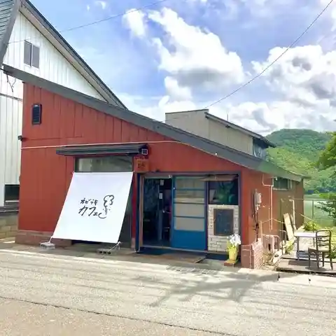
Nebirakikafe
Café in Nishiwaga, Iwate.
道の駅 錦秋湖
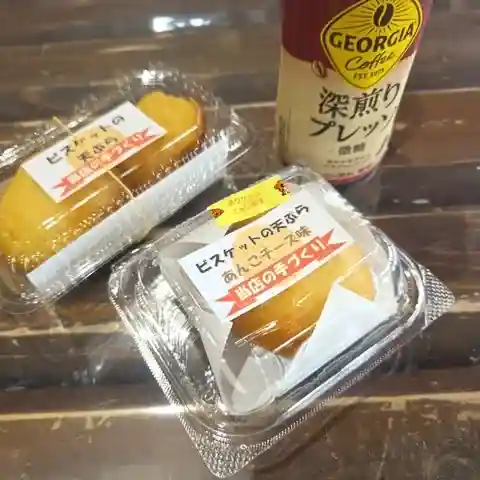
Michi No Eki Kinshuu Mizuumi
Roadside-station eatery in Nishiwaga, Iwate.
お菓子処 たかはし
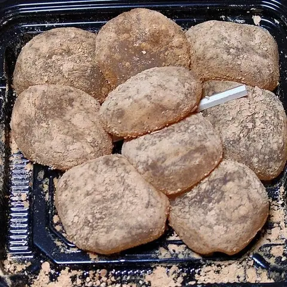
O Kashi Tokoro Takahashi
Japanese sweets shop in Nishiwaga, Iwate.
四季彩の宿 ふる里
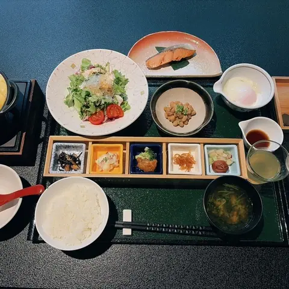
Shiki Sai No Yado Furu Sato
Inn restaurant in Nishiwaga, Iwate.
大丸食堂
Daimaru Shokudou
Shokudo diner in Nishiwaga, Iwate.
工藤菓子店
Kudou Kashi Mise
Japanese sweets shop in Nishiwaga, Iwate.
縄文の谷 kitchen開
Joumon No Tani Kitchen Kai
Creative-cuisine restaurant in Nishiwaga, Iwate.
春乃家
Haruno Ie
Soba restaurant in Nishiwaga, Iwate.
スーパーオセン 湯本本店
Suupaaosen Yumoto Honten
Convenience store in Nishiwaga, Iwate.
利久庵
Toshihisa Iori
Soba restaurant in Nishiwaga, Iwate.
萬鷹旅館
Man Taka Ryokan
Inn restaurant in Nishiwaga, Iwate.
新清館
Shin Kiyoshi Kan
Inn restaurant in Nishiwaga, Iwate.
レストハウス ゆのさわ
Resutohausu Yunosawa
Tofu restaurant in Nishiwaga, Iwate.
雪国のだんご屋 団平
Yukiguni Nodango Ya Dan Taira
Japanese sweets shop in Nishiwaga, Iwate.
カタカゴ・ヒルズカフェ
Katakago Hiruzukafe
Café in Nishiwaga, Iwate.
高繁旅館
Taka Han Ryokan
Inn restaurant in Nishiwaga, Iwate.
農家食堂およね
Nouka Shokudou Oyone
Shokudo diner in Nishiwaga, Iwate.
Sights
Ichinichi Monogatari (Local Sweet)
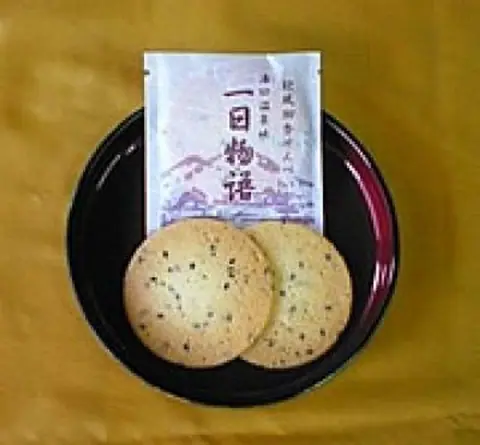
"One day story" is named after the novel by Meiji haiku poet Masaoka Shiki.
Oyone Manju
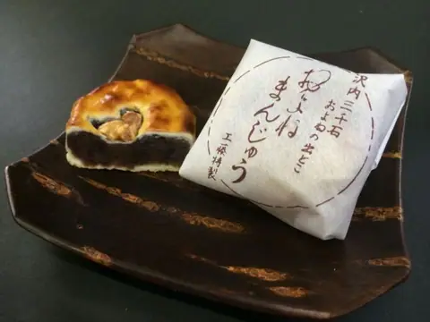
Oyone-manju" is named after a tragic tale passed down in Nishiwaga Town.
Hiruyama skunk cabbage colony
There is also a walking path, so you can enjoy skunk cabbage nearby while taking a stroll.
Nishiwaga Town Katakuri native habitat
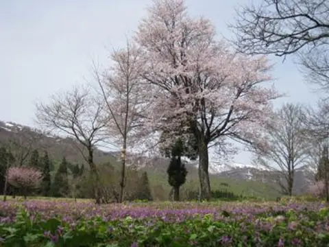
There are clusters of katakuris in Nishiwaga Town, and you can enjoy them everywhere.
Sawauchi Natural Bracken Garden
Sawauchi Natural Bracken Garden is located in the midst of magnificent nature at the foot of Mt.
Hidarikusa Skunk Cabbage Colony
On the way to Higusa Onsen "Fureai Yuseikan", there is a colony of Zazensou.
Suppon (Soft-Shelled Turtle)
Nishiwaga Town is blessed with abundant hot spring resources and beautiful scenery.
Wagadake
At an altitude of 1,440 meters, Mt. Wagadake retains valuable natural beauty such as primeval beech forests and clumps of alpine plants.
Mt. Mahiru
Mt. Mahiru has been popular as an object of faith for local residents since ancient times.
Spring Mountain Wildflowers
In Nishiwaga Town, from late April to mid-May, when the snow disappears, trees begin to bud and a variety of flowers begin to bloom all at once.
Bentenjima
There is an island created by nature in the middle of the clear stream of the Waga River.
Kagura Offering at Sakamoto Shrine
The Maegō Summer Festival, a festival held at Sakamoto Shrine in August, is a lively event with Sakamoto Kagura offerings, Bon dances, night stalls, and more.